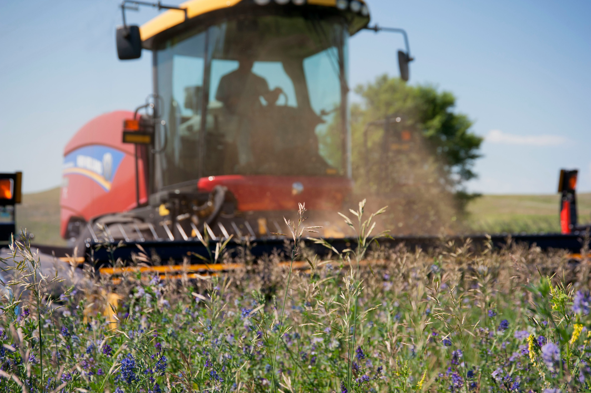

Ofrecemos las frutas y verduras más frescas directamente de productores locales.
AgroMarket se posiciona como el líder en la comercialización de frutas y verduras frescas, promoviendo una alimentación saludable y sostenible. Nuestra visión es ser reconocidos como el proveedor preferido por los consumidores y empresas, destacando por la calidad de nuestros productos y el compromiso con el medio ambiente.

Nuestra misión es ofrecer frutas y verduras de la más alta calidad, cultivadas de manera sostenible y responsables con el medio ambiente. Nos esforzamos por conectar a los agricultores locales con los consumidores, garantizando frescura, sabor y nutrición en cada producto que ofrecemos.
Fomentamos prácticas agrícolas responsables y sostenibles, apoyando a los agricultores locales y minimizando el impacto ambiental. Nos comprometemos a ofrecer productos frescos, de alta calidad y seleccionados cuidadosamente para satisfacer las necesidades de nuestros clientes. Mantenemos una comunicación abierta y honesta con nuestros proveedores y consumidores, garantizando la trazabilidad de nuestros productos y buscamos constantemente nuevas formas de mejorar nuestros procesos y servicios para ofrecer la mejor experiencia al cliente.